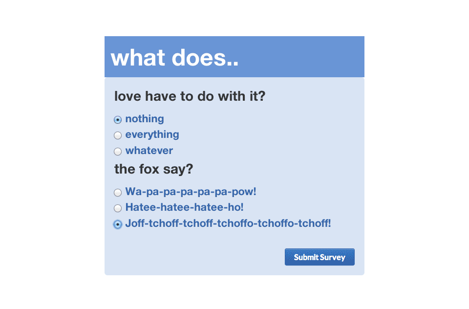
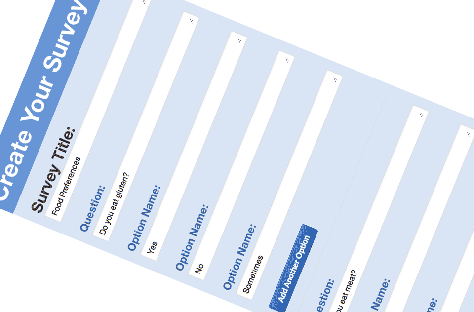

Survey Slug

Brief
Survey Slug was a project created at Dev Bootcamp, it was a weekend project with a 5 people team, and the objective was creating a Survey Gorilla Clone.
Is that a Framework in your pants?
Having a couple of days and quite a few views to render, going to a framework fo the styling was a no-brainer. I picked my favourite one: Bourbon, and this time included the default skeleton from Bitters.
I don't remember a lot from this project, since it was all going so fast I didn't have time to take notes. In the end it works responsively, and although it's too generic and 'frameworky' it was the best looking one among all the projects presented that day.
You can visit Survey Slug if you want to take a look. Thanks to Brittany Mazza for the screenshots.